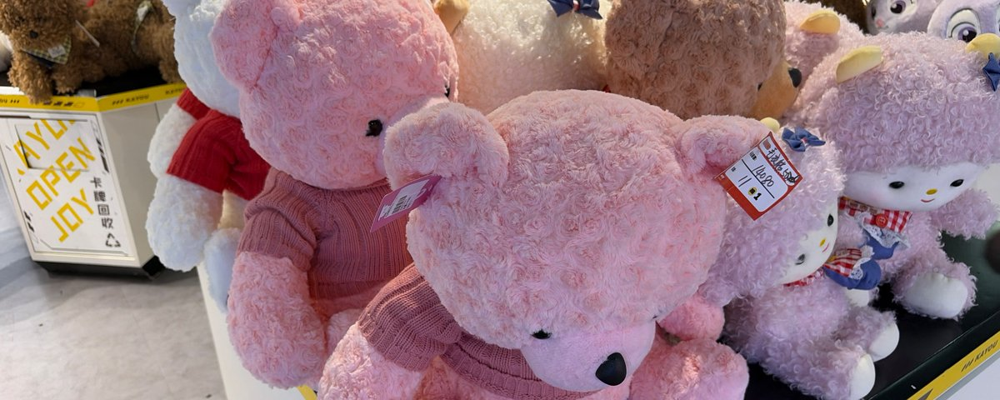

在很多年前网络上非常风行这样一种说法，即活着就是应该去看世界去冒险去跳伞滑雪诸如此类。但事实就是这一切带来的感受都是暂时性的，当一个人只站在消费的端口，当下的一切都带有即时性并且注定会快速消失。这是消费的本质，不会以人的意志为转移。
许多人追求这种行为，因为它在消费主义语境下被有意地与“自由”“自我实现”等词汇绑定在一起。购买体验会让人短暂地产生一种权力感：我可以选择、我可以决定。但许多类似博主的真正自由来自于ta们消费后依旧充实的银行卡余额而非消费本身。
在经济很难评的当下，多数人难以持续参与这种高成本的意义生产。意义的需求并没有消失，只是转移到了成本更低的空间，即互联网圈层。
进入圈子后，会迅速获得一种主观体验：我有同伴、有立场，我能参与评价，我能决定谁是自己人谁是外人。这种体验与掌控感极具吸引力。然而它当然也是虚假、短暂的。
它被平台与圈层结构共同塑造。算法会持续放大能够激发情绪的内容。圈层内部的头部账号则不断定义内部认同风向。真正获利的当然不会是普通成员，而是公司平台以及圈层中处于上层的位置的人。普通成员站在消费端口，贡献金钱、时间、注意力与传播，而上层结构则把这些转化为收益。
当圈层把认同包装成权力，把情绪包装成自主，把重复包装成表达时，个体会在不断消费符号的过程中误以为自己正在获得权力和自由。
所有成熟圈层的结构都注定是金字塔形，由底层消费、供给上层。结构的力量比任何人想象的都要强大，只要进入就不可能有例外。在当下，注意力、时间等都是金钱，本质是消费行为供给情绪需求，对维护心理健康百害无一益。
普通人应该尝试进入那些更靠近生产端口、能够延缓满足感产生的行为之中，接受结果与反馈之间重新出现时间差。例如阅读长篇书籍，学习一门语言，写作，长期运动等等。
延迟满足型行为也会迫使人重新面对独处。在圈层中，一个人几乎永远处于被回应状态。可人如果无法忍受没有反馈的状态，就很难建立稳定的人格。
而这也让我重新回到文章最开始的问题。无论是体验消费，还是互联网圈层中的身份消费，它们都在向人出售一种关于权力与掌控的想象。
消费主义最强大的地方，从来不只是让人购买商品，而是让人误以为自己的欲望是自然产生的。事实上，我们渴望什么、感到被认可于什么，很大程度上都已经被算法和圈层文化预先塑造。这就是消费主义，它会不断替你命名欲望，再把满足这些欲望的路径重新卖给你。
消费会给人营造一种自己也置身于同等圈层的虚假繁荣，满足了人的虚荣心，实际上这是圈子里那一小部分人的日常，离开了消费实际上自己该是哪个阶层就是哪个阶层，消费带来的繁荣泡沫早晚会破的
一切圈子都会在运转的过程中自发地形成阶级，所有的阶级都会通过各种方式来标志自己的阶级属性，在目前的消费社会大环境下一般来说这个方式都会是消费
https://t.co/Kvt7ITecFr
Article attached to this post
普通人不可能在圈子中获得真正的权力
